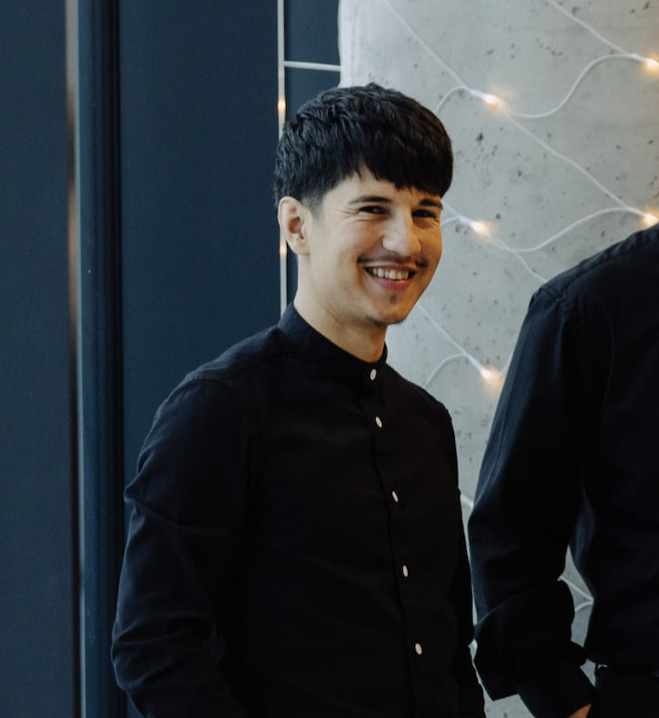

Szabó Gedeon

Summary
Dedicated and goal-oriented individual with a passion for personal growth
and achievement. A proud father, I balance a thriving family life with my
commitment to pursuing and attaining professional goals.
Education
-
Bachelor of Robotics, Management and Technological Engineering -
University of Oradea (2015-2019)
Work experience
-
Plant Nursery Professional "Sere Florettima" Greenhouse and nursery
2020-Present
Achievements/Tasks
-
Production specialist: My job is to produce, propagate and supervise
plants, helping them grow in large quantities.
-
Sales assistant: I contribute to the family business by delivering
the most sales results, in the shortest possible time, which is
always a success.
-
Maintenance: In a family business, continuous improvement and
maintenance is important, so I have a lot of responsibilities here
too.
-
PLC Automatist Engineer at Sedo Electric SRL
2019-2020 (1 yr)
Achievements/Tasks
- Implementation of PLC programmes
- Projects at Michelin and Tenaris in Zalău
- Skills: Siemens, Stdep 7, SQL Database
-
Robot Engineer - Off-line Programming at Comau Romania
2018-2019 (1 yr)
Achievements/Tasks
- Cycle time reduction in the car manufacturing department
- Responsibility in collision-free robot movements
-
Ford project - B515 (EcoSport):robot programming in OLP department:
XML data updates
-
Ford project - BX726 (PUMA): robot programming in OLP department:
manipulation, welding, glueing
-
Fiat Project - Mirafiori: robot programming in OLP department:
implementation of new robot production lines
-
Construction worker at Rapid Com Impex SRL
07/2015-09/2015 (2 mo)
Achievements/Tasks
- Purchasing materials, drive and asssistant worker
Skills
Tech Skills
- GIT
- SQL
- CSS3
- HTML5
- WebPack
- JavaScript
- Simatic Step 7
- Process Simulate
Soft skills
- GTD
- Agile
- Scrum
- Flexibility
- Teamwork
- Adaptability
- Communication
- Time management
Certifications